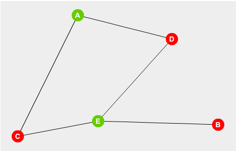

Dromedários do Deserto
TL: 2 segundos (~50 casos)
ML: 64 MB
Fábio é um Sheik do deserto. Ele monopoliza o transporte de dromedários por lá. Há algumas cidades no deserto conectadas por estradas de areia. Há sempre um caminho entre as cidades e entre cada par de cidades há no máximo uma estrada de duas mãos.
Fábio é muito excêntrico. Em cada cidade ele constrói um castelo. Existe dois tipos de castelo, e ele quer que entre cidades adjacentes (em cidades conectadas por uma estrada) os castelos sejam de tipos diferentes. Dada a configuração das cidades e dos castelos, responda se é possível construir castelos de acordo com as regras de Fábio.

O último caso de teste está representado acima. Neste caso é possível obter a configuração desejada.
Entrada
A primeira linha de cada caso de teste contém os números N (1 <= N <= 10^5) e M (1 <= M <= 10^6), indicando o número de cidades e o número de estradas de areia. Cada uma das M linhas seguintes representa uma estrada. Há dois números em cada linha, que são os identificadores de duas cidades conectadas pela estrada, o identificador das cidades irá de 1 até N. Leia até o EOF.
Saída
Imprima "S" se existir uma configuração e "N" caso contrário.
Exemplos
Entrada de Teste
3 2
1 2
2 3
3 3
1 2
3 2
3 1
5 5
1 2
1 3
2 4
3 4
4 5
Saída de Teste
S
N
S